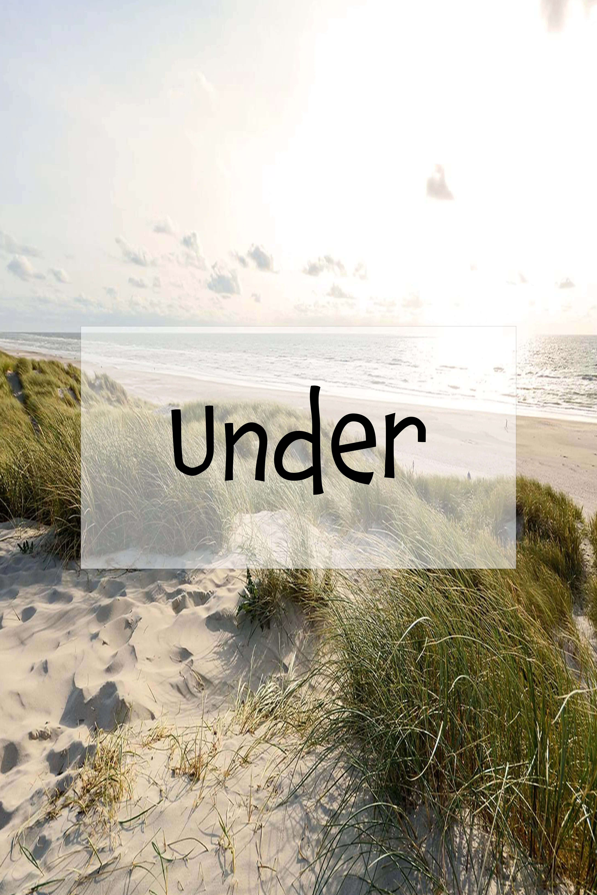

Før
Før I går ud i naturen er det vigtigt at I kender til de 9 sankeregler. Husk at læse dem godt igennem! Det er vigtigt at have kendskab til hvilke råvarer der er i sæson lige nu for at forbedre sin sankning

Under
Det er vigtigt at kigge på landskabet og undersøge naturen efter de råvarer, I vil lede efter. I kan bruge billeder og beskrivelser til at finde de rigtige råvarer. I må selvfølgelig ikke spise de planter, I finder derude, men i første omgang nøjes med at tage dem med hjem. Husk rådene fra “Sankeregler”, når I samler.
Efter
Først skal I sikre jer, at det er de rigtige råvarer, I har sanket. Så høsten skal gennemgås af en voksen. Derefter er det tid til at gå i gang med madlavningen.